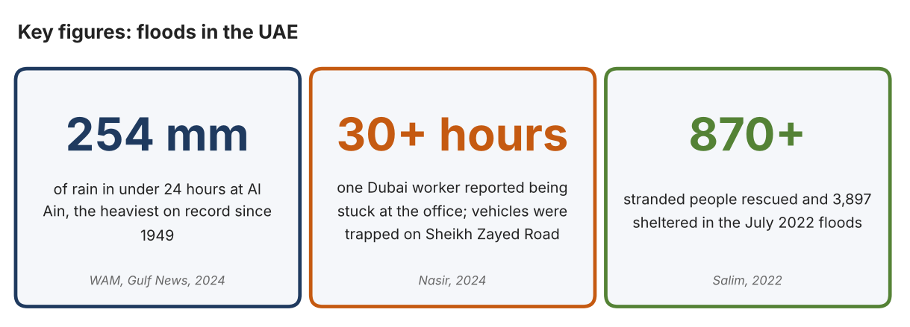
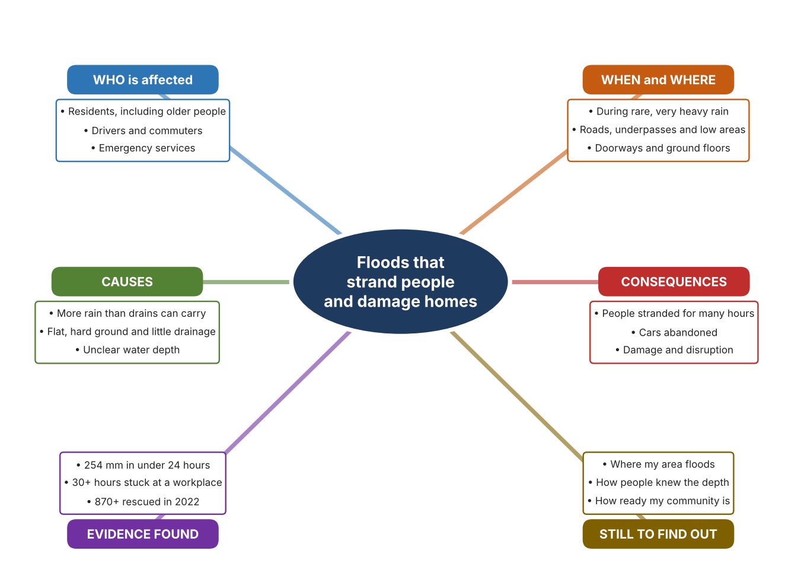
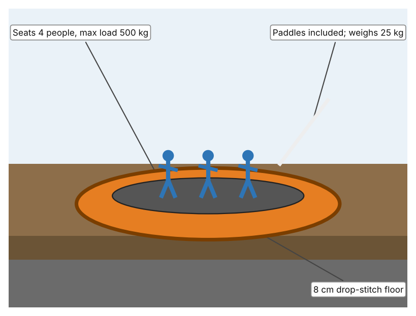
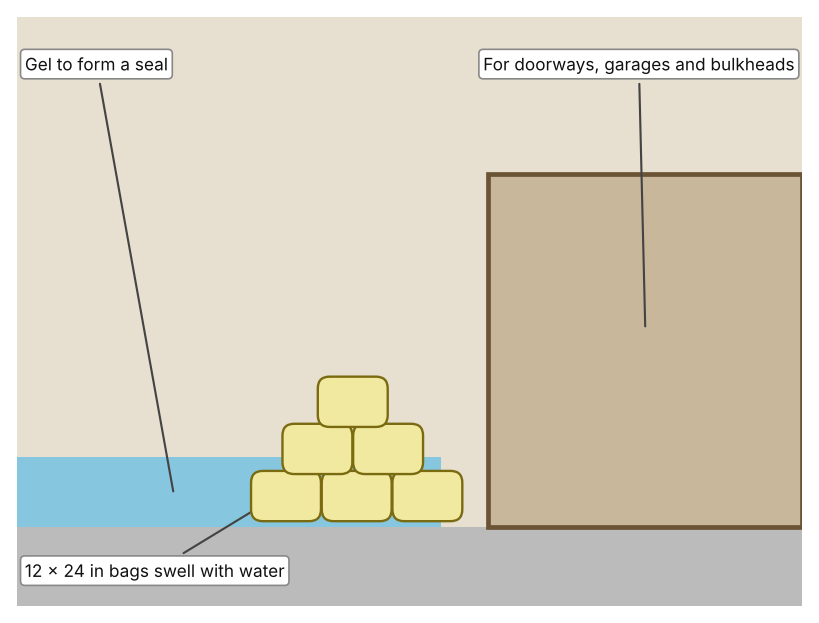
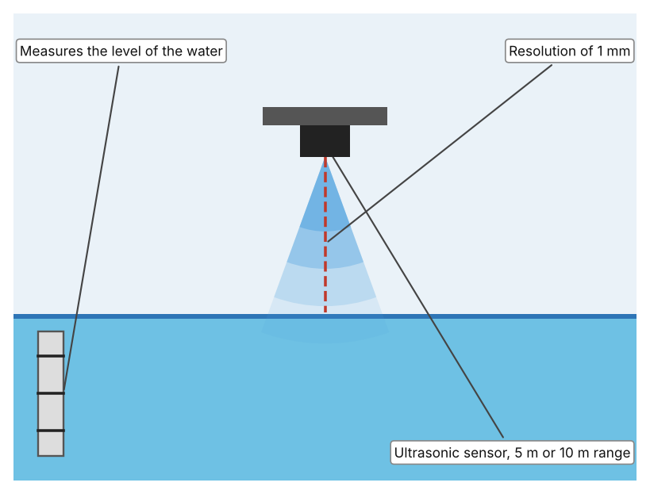

A1 · Design need
Identify and explain the problem faced by your client and community.
My client is the Emergency Planning Coordinator of a residents' association in Dubai (a fictional client created for this task). The community lives on low, flat ground with many roads, car parks and ground-floor entrances. The coordinator saw how quickly roads filled in the heavy rain of April 2024, and is concerned that a similar event could leave residents stranded, cut off from help or with water in their homes. The client needs people in the community to be kept safe, and their homes and belongings protected, when heavy rain and flooding happen.
The residents are affected first, especially older people, children and people with limited mobility. Drivers and commuters are affected because roads and underpasses can become impassable. Emergency services are affected because they must reach many people at once. Shops, schools and offices are affected because floodwater damages stock, equipment and access, and the whole community suffers when roads are blocked for hours or days.
The need is supported by evidence. In April 2024 the UAE recorded 254 mm of rain in less than 24 hours at Khatm Al Shakla in Al Ain, the heaviest rainfall since records began in 1949 (WAM). One Dubai resident told The National that he had been stuck in his workplace for more than 30 hours, many drivers abandoned waterlogged vehicles, and Sheikh Zayed Road became largely impassable (Nasir). In July 2022, more than 870 stranded people were rescued, over 150 of them from flooded homes, and 3,897 people were given shelter in the eastern emirates (Salim). I note that the first two sources describe one extreme event and give no count of abandoned vehicles or rescues.
Figure 1 summarises the key figures. In my own words, the problem is not only the rain, but the combination of water, unclear depth and the lack of a quick way out or a way to protect a doorway. I still need to find out where my own neighbourhood is most likely to collect water and how prepared people feel, and I will do that with an observation checklist and a short survey. Figure 2 is my mind map of the problem.
356 words


A2 · Research plan
Six research questions of different types, each with a priority, a research type and evidence.
| # | Question | Priority | Primary / secondary | Evidence | Brief answer |
|---|---|---|---|---|---|
| 1 | Factual: How much rain fell in April 2024, and how does it compare with the past? | High | Secondary | WAM, Gulf News, 2024 (Appendix A, Source 1) | 254 mm in under 24 hours at Khatm Al Shakla, Al Ain, to 9 pm on 16 April 2024; the heaviest on record since 1949, according to the National Centre of Meteorology. |
| 2 | Factual: What happened to people, vehicles and roads during the floods? | High | Secondary | Nasir, The National, 2024; Salim, Khaleej Times, 2022 (Appendix A, Sources 2 and 3) | Residents stuck for over 30 hours, vehicles and buses trapped, Sheikh Zayed Road largely impassable, Metro open at one station only; in 2022, over 870 rescued, over 150 from flooded homes, 3,897 sheltered. |
| 3 | Conceptual: Why does floodwater become dangerous so quickly, and how could depth or danger be detected? | Medium | Secondary | Appendix A, Sources 2, 3, 5 and 6 | Depth is hard to judge, vehicles stall and roads disappear under water. A depth can be measured by a device, a barrier can be placed at a doorway, or people can be moved out by a boat or raft. |
| 4 | Debatable: Should communities prepare for floods by moving people out, by protecting buildings, or by measuring and warning? | Medium | Secondary | Appendix A, Sources 4, 5 and 6 | Moving people helps those at risk but only after the water arrives; protecting buildings keeps damage out but not people; measuring and warning gives time but needs people to act. My view: they work together. |
| 5 | Debatable (challenges my assumption, UAE source): Heavy floods like April 2024 are very rare, so is it worth a community planning for them? | High | Secondary | WAM, 2024; Salim, 2022 (Appendix A, Sources 1 and 3) | April 2024 was the heaviest rain since 1949, so it is rare, but the July 2022 floods already rescued over 870 people, which suggests that serious events can come within two years of each other. |
| 6 | Factual (primary): Where does water collect in our neighbourhood, and how prepared do people feel? | High | Primary | Own area checklist and survey (Appendix A, Sources 7 and 8) | [Student data needed: write the checklist counts and survey averages (with permission), then two sentences on the pattern you see.] |
A3 · Existing products
Three significantly different products, each analysed with ACCESS FM, with pros and cons.
Product 1: Inflatable rescue raft (ndiver 3.3 m raft)

Illustration by the author based on “Inflatable Raft 3.3m (10'8),” ndiver (Appendix A, Source 4). [Student: replace with a photo from the source, cited MLA 9]
Product 2: Water-activated flood bags (Quick Dam)

Illustration by the author based on “Quick Dam Water Activated Flood Bags 12in x 24in,” Spill911 (Appendix A, Source 5). [Student: replace with a photo from the source, cited MLA 9]
Product 3: Ultrasonic flood-level sensor (MaxBotix)

Illustration by the author based on “Flood Level Ultrasonic Sensor,” MaxBotix (Appendix A, Source 6). [Student: replace with a photo from the source, cited MLA 9]
ACCESS FM analysis
| ACCESS FM | Product 1 | Product 2 | Product 3 |
|---|---|---|---|
| Aesthetics | Inflatable raft in red, yellow, orange, black or green. | Flat bags that swell into a barrier; the page gives no description of looks. | Small sensor mounted above the water; no description of looks on the page. |
| Cost | £699 including VAT (listed as down from £774). | $720 for a pack of 120. | $109.95. |
| Customer | Rescuers and households that need to move people through floodwater; capacity 4 persons. | Households, shops and event organisers protecting doorways and garages. | Communities and authorities that want to know the water level. |
| Environment | Inflates with a manual hand pump; outboard of up to 4 HP petrol or 3 kW electric is recommended; inflation time not stated. | Activated by contact with water; the page gives no swell time or duration. | Power, output and rating are not stated on the page. |
| Size | 3.3 × 1.4 m; weighs 25 kg; sponsons 38 cm in diameter. | Each bag is 12 × 24 in. | Two range options: 5 m or 10 m. |
| Safety | Floor is 8 cm drop-stitch fabric; two sponson chambers and one floor chamber. Bystander view: a rescue craft still needs a trained person to steer it. | The swollen bags divert water. Bystander view: they only protect the place where they are laid. | Measures to 1 mm. Bystander view: only helps if someone reads and acts on the data. |
| Function | Carries up to 500 kg of people across floodwater; two benches, paddles and repair kit are included. | Absorb water, swell and gel to form a tight seal that diverts floodwater. | Measures the distance to the water surface with ultrasound and gives a water level to 1 mm. |
| Materials | Floor of drop-stitch fabric and PVC; sponsons of commercial-grade PVC; stainless steel D-ring. | Materials are not stated. | Materials are not stated. |
Pros and cons
| Product 1 | Product 2 | Product 3 | |
|---|---|---|---|
| Pro | Moves several people at once without fuel and is easy to store. | Reacts automatically to water and each bag is easy to carry. | Gives an accurate level to 1 mm at a low price. |
| Con | Needs a trained person to use and only helps once people are already stranded. | Protects only a doorway-size area and the page gives no swell time or duration. | Only measures, so people must read the data and act, and power and rating are not stated. |
A4 · Design brief
Restate the need, summarise the research and the existing products, and state the design intent.
My client, the Emergency Planning Coordinator of a residents' association in Dubai, needs people in the community to be kept safe, and their homes protected, when heavy rain and flooding happen. In April 2024 the UAE recorded 254 mm of rain in under 24 hours in Al Ain, the heaviest since records began in 1949 (Appendix A, Source 1). One resident reported being stuck at work for more than 30 hours, and many drivers abandoned waterlogged vehicles (Appendix A, Source 2). In July 2022, more than 870 stranded people were rescued and 3,897 were sheltered (Appendix A, Source 3).
My research shows that the danger comes from water, unclear depth and the lack of a quick way out or a way to protect a doorway (Appendix A, Sources 1 to 3). My debatable questions led me to conclude that moving people, protecting buildings and measuring and warning each address a different part of the problem. My challenged assumption was that such floods are too rare to plan for; April 2024 was exceptional, but July 2022 shows that serious events can occur close together. I will gather my own evidence with an area checklist and a survey, from public areas and with an adult (Appendix A, Sources 7 and 8).
I analysed three very different existing solutions. An inflatable raft carries four people with a 500 kg maximum load and weighs 25 kg, but it needs a trained person to use it and only helps once people are stranded (Appendix A, Source 4). Water-activated flood bags swell and gel to form a seal at a doorway, but they protect only a small area and the page gives no swell time or duration (Appendix A, Source 5). An ultrasonic flood-level sensor measures to 1 mm, but it only measures and someone must act on the result (Appendix A, Source 6). They give me three ideas for inspiration: move people, keep water out, and measure the danger.
My design intent is therefore to create a solution that helps to keep people safe and their property protected during floods, by reducing the chance that they are stranded or harmed, or by reducing the damage that water does. It must be affordable for a community, simple enough for untrained people to use, reliable in a storm, and safe for users and for the people around them. I have deliberately not fixed what form it will take. That decision will be made in Criterion B, after I analyse my own checklist and survey against the evidence in Appendix A.
423 words
Appendix A · Research notes and sources
Secondary sources in MLA 9, with notes and where each source is used.
| # | Source (MLA 9) | Key notes | Used in |
|---|---|---|---|
| 1 | WAM. “UAE Witnesses Largest Amount of Rainfall in 75 Years.” Gulf News, 18 Apr. 2024, gulfnews.com/uae/weather/uae-witnesses-largest-amount-of-rainfall-in-75-years-1.1713319645595. Accessed 21 Oct. 2026. | 254 mm in less than 24 hours at Khatm Al Shakla, Al Ain, in the 24 hours to 9 pm on 16 April 2024; the heaviest on record since 1949, according to the National Centre of Meteorology. | A1; A2 Q1 and Q5; A4. |
| 2 | Nasir, Sarwat. “Dubai Residents ‘Stuck in Offices for over 30 Hours’ as Floods and Rain Cause Chaos.” The National, 17 Apr. 2024, www.thenationalnews.com/news/uae/2024/04/18/dubai-floods-rain-cars/. Accessed 21 Oct. 2026. | One worker stuck at his Dubai Marina office for more than 30 hours; many drivers abandoned waterlogged vehicles; cars and buses trapped; Sheikh Zayed Road largely impassable; Metro open at one station only; no total count of abandoned vehicles given. | A1; A2 Q2, Q3 and Q4; A4. |
| 3 | Salim, Sahim. “UAE: 870 Stranded People Rescued after Torrential Rains Flood Emirates.” Khaleej Times, 28 Jul. 2022, www.khaleejtimes.com/uae/emergencies/uae-150-stranded-people-rescued-after-torrential-rains-flood-homes. Accessed 21 Oct. 2026. | Over 870 stranded people rescued, over 150 of them from flooded homes, and 3,897 given shelter in Sharjah and Fujairah, according to the Ministry of Interior. Article from 2022. | A1; A2 Q2, Q3 and Q5; A4. |
| 4 | “Inflatable Raft 3.3m (10'8).” ndiver, www.ndiver.com/inflatable-raft-33. Accessed 21 Oct. 2026. | £699 including VAT; 4 persons, maximum load 500 kg; 3.3 × 1.4 m; 25 kg; drop-stitch fabric floor 8 cm thick; PVC sponsons of 38 cm; paddles, hand pump, repair kit and two benches included; inflation time not stated. | A2 Q3 and Q4; A3 Product 1; A4. |
| 5 | “Quick Dam Water Activated Flood Bags 12in x 24in (120/pack).” Spill911, spill911.com/products/quick-dam-qd1224-120. Accessed 21 Oct. 2026. | $720 for 120 bags; each 12 × 24 in; when exposed to water the bags absorb, swell and gel to form a tight seal; uses include doorways, garages and bulkheads; swell time, duration and materials not stated. | A2 Q3 and Q4; A3 Product 2; A4. |
| 6 | “Flood Level Ultrasonic Sensor.” MaxBotix, maxbotix.com/products/flood-level-ultrasonic-sensor. Accessed 21 Oct. 2026. | $109.95; 5 m or 10 m range; 1 mm resolution; power, output and rating not stated on the page. | A2 Q3 and Q4; A3 Product 3; A4. |
| 7 | Primary: area checklist, completed by the student on [date]. Accessed own data. | [Student: summarise your counts.] | A2 primary question; A4. |
| 8 | Primary: survey of [number] people, completed on [date]. | [Student: summarise your averages.] | A2 primary question; A4. |
Primary research instrument 1: area checklist
Student completes the checklist by day from public areas with an adult, never during rain or in floodwater.
| Area | Sign of standing water (Y/N) | Drain visible and clear (Y/N) | Raised entrance (Y/N) | Higher ground nearby (Y/N) | Notes |
|---|---|---|---|---|---|
| Road near home or school | |||||
| Building entrance | |||||
| Underpass or low area | |||||
| Car park |
Primary research instrument 2: survey
Rate each statement from 1 (strongly disagree) to 5 (strongly agree). Collect responses with permission and record no names.
| Statement | 1 | 2 | 3 | 4 | 5 | Total responses |
|---|---|---|---|---|---|---|
| I know where I would go if my street flooded. | ||||||
| I could tell how deep floodwater was before I entered it. | ||||||
| My home or school entrance would stay dry in very heavy rain. | ||||||
| I worry about heavy rain and flooding. |